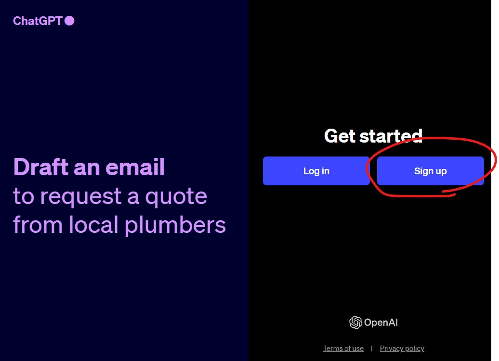
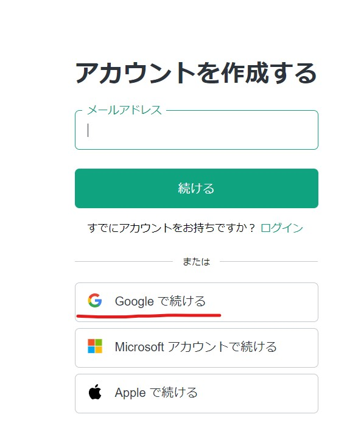

Unity班に登録したらやっておいてほしいこと
円滑に作業を進めるためにやっておいてほしいことがあります。
Unity(部活での開発用)のGメールアカウントを作成する
普段プライベートで使っているアカウントではなく、自分で好き勝手できるアカウントを一つ持っておいてほしいです。
Chat GPTやGit・GitHubのアカウント、Unityのアカウントなどを登録して一括管理したり、プログラム関連で調べたいことやブックマークしておきたいことなどをまとめておけるので、普段使っているプライベートのアカウントと分けておくといいと思います。
企画書の作成
あなたが作りたいゲームの企画書を作ってください。PowerPointかWordを使うと簡単に作成できます。あなたのアイデアを人に伝えること、こういうところが面白いというポイントをまとめて出してください。
Chat GPTがいつでも使えるようにしておく
Chat GPTは、OpenAIが開発し生成AIです。無料で使えます。コードのデバッグや作成をしてくれます。アカウントの作成手順を下に示します。
ChatGPTのログインページへアクセス
ChatGPTログインページへアクセスします
このようなページが出てくるので右のSign upをクリックしてください
Googleで続けるをクリックします。後は手順に沿ってやっていけばアカウントが作れます